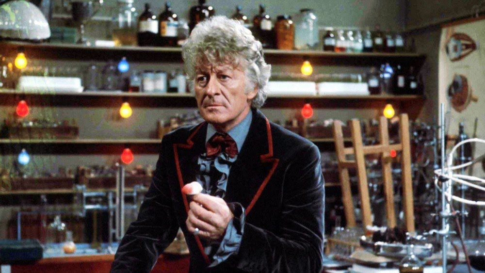

Maxine Morse CIS 155 Website Project
Classic-Who
The 1st Doctor
- Played By: William Hartnell
- Seasons: season 1-3
The 2nd Doctor
- Played By: Patrick Troughton
- Seasons: season 4-6

The 3rd Doctor
- Played By: Jon Pertwee
- Seasons: season 7-11
The 4th Doctor
- Played By: Tom Baker
- Seasons: seasons 12-18
The 5th Doctor
- Played By: Peter Davdison
- Seasons: seasons 19-21
The 6th Doctor
- Played By: Colin Baker
- Seasons: seasons 22 and 23
The 7th Doctor
- Played By: Sylvester McCoy
- Seasons: seasons 24-26
The 8th Doctor
- Played By: Sylvester McCoy
- Appeared in: 1996 Doctor Who TV Movie
New Who
The 9th Doctor
- Played By: Christopher Eccleston
- Seasons: Series 1
The 10th Doctor
- Played By: David Tennant
- Seasons: Series 2-4
The 11th Doctor
- Played By: Matt Smith
- Seasons: Series 5-7
The 12th Doctor
- Played By: Peter Capaldi
- Seasons: Series 8-10
The 13th Doctor
- Played By: Jodie Whittaker
- Seasons: Series 11-13
The Whoniverse
The 14th Doctor
- Played By: David Tennant
- Appeared In: 60th Anniversary Specials 1, 2, and 3
The 15th Doctor
- Played By: Ncuti Gatwa
- Seasons: Current
Specialty Doctors

The War Doctor
- Played By: John Hunt
- Appeared In: "The Day of the Doctor"
The fugitive Doctor
- Played By: Jo Martin
- Appeared In: series 12
Return To Top